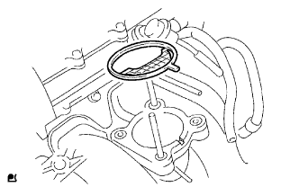
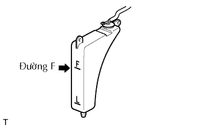

CỔ HỌNG GIÓ > LẮP |
| 1. LẮP CỔ HỌNG GIÓ |
|  |
Lắp gioăng mới lên đường ống nạp.
 |
Lắp cụm cổ họng gió bằng 2 bulông và 2 đai ốc.
Nối 2 ống nước đi tắt vào cổ họng gió.
Ngắt giắc nối cảm biến vị trí bướm ga và giắc nối môtơ điều khiển.
| 2. LẮP ỐNG NỐI KHÍ NẠP |
| 3. ĐỔ NƯỚC LÀM MÁT ĐỘNG CƠ VÀO |
Xiết chặt tất cả các nút và đổ SLLC của Toyota vào.
Hãy đổ SLLC của Toyota vào bình chứa đến vạch F.
Hãy bóp các ống (mềm) nước ra và vào một vài lần bằng tay, sau đó kiểm ra rò rỉ nước làm mát.
Nếu mức nước làm mát giảm xuống dưới vạch F, hãy đổ thêm SLLC của Toyota đến vach F.
Lắp nắp két nước.
Hãy xả khí ra khỏi hệ thống làm mát.
Hâm nóng động cơ cho đến khi van hằng nhiệt mở.
Trong khi van hằng nhiệt đang mở, tuần hoàn nước làm mát trong một vài phút.
Duy trì tốc độ động cơ tại tốc độ 2,500 đến 3,000 vòng/phút.
Hãy bóp các ống (mềm) nước ra và vào một vài lần bằng tay để xả khí.
Tắt máy và đợi đến khi nước làm mát nguội đến nhiệt độ môi trường.
|  |
Kiểm tra mức nước làm mát trong bình chứa nước làm mát.
Nếu mức nước làm mát sụt xuống dưới vạch F, hãy đổ thêm SLLC của Toyota vào bình chứa đến vạch F.
| 4. NỐI CÁP VÀO CỰC ÂM ẮC QUY |
| 5. TIẾN HÀNH THIẾT LẬP BAN ĐẦU |
Tiến hành thiết lập ban đầu (Xem trang Kích chuột vào đây).
| 6. KIỂM TRA RÒ RỈ NƯỚC LÀM MÁT ĐỘNG CƠ |
Kiểm tra rò rỉ nước làm mát động cơ (Xem trang Kích chuột vào đây).